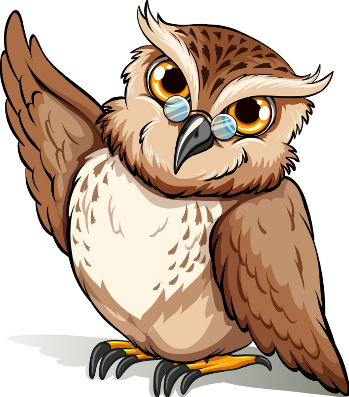

Simón
Había una vez en un hermoso bosque, un grupo de animales que vivían en armonía. Entre ellos se encontraba Simón, un sabio búho conocido por su gran inteligencia y su generosidad. Simón siempre estaba dispuesto a ayudar a los demás y compartir su sabiduría.
Un día, los animales del bosque se encontraban preocupados por una situación de escasez de comida. Las cosechas habían sido pobres y el invierno se acercaba rápidamente. Todos estaban angustiados y no sabían qué hacer.
Entonces, Simón convocó a una asamblea en el claro del bosque. Todos los animales se reunieron alrededor del búho, ansiosos por escuchar su consejo. Simón les explicó que el único modo de sobrevivir era trabajar juntos y compartir lo poco que tenían.
Todos los animales escucharon atentamente las palabras de Simón y estuvieron de acuerdo en seguir su consejo. Decidieron formar un comité en el que cada animal contribuiría con su habilidad única para ayudar a enfrentar la escasez.
La ardilla recolectaba nueces y las almacenaba en un granero comunitario. El conejo cavaba madrigueras adicionales para aquellos animales que no tenían refugio suficiente. El pájaro carpintero construía comederos para las aves y el castor creaba represas para asegurar el suministro de agua.
Incluso los depredadores como el lobo y el zorro se unieron al esfuerzo colectivo. El lobo lideraba la caza, pero solo tomaba lo necesario y dejaba suficiente presa para los demás. El zorro utilizaba su astucia para evitar conflictos y mantener la paz en el bosque.
Gracias a la colaboración de todos, el invierno fue más llevadero. A pesar de las dificultades, los animales encontraron consuelo y fortaleza en la solidaridad y el apoyo mutuo. Compartían su alimento, sus refugios y su amistad.
Con el tiempo, la escasez de comida se superó y el bosque volvió a florecer. La generosidad y el espíritu de trabajo en equipo de los animales se convirtieron en una tradición que se transmitió de generación en generación.
Desde entonces, el bosque se convirtió en un lugar conocido por su armonía y cooperación. Los animales comprendieron que, al unir sus fuerzas y compartir sus recursos, podían superar cualquier dificultad.
La fábula de Simón el búho enseñó a todos que la verdadera sabiduría radica en el respeto mutuo, la generosidad y la colaboración. Y así, el bosque se convirtió en un reflejo de la sabiduría y la bondad que todos podemos encontrar cuando trabajamos juntos por un objetivo común.